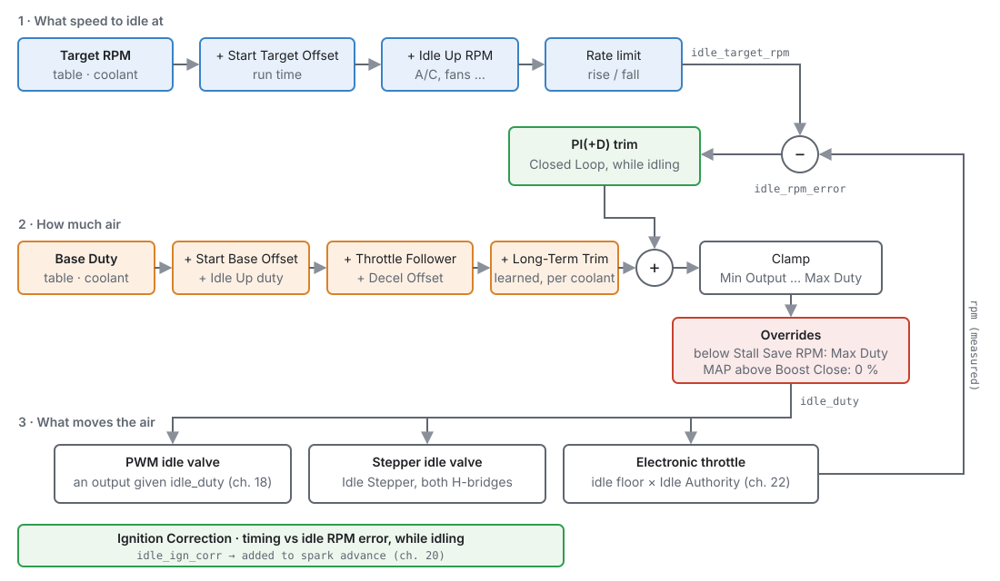
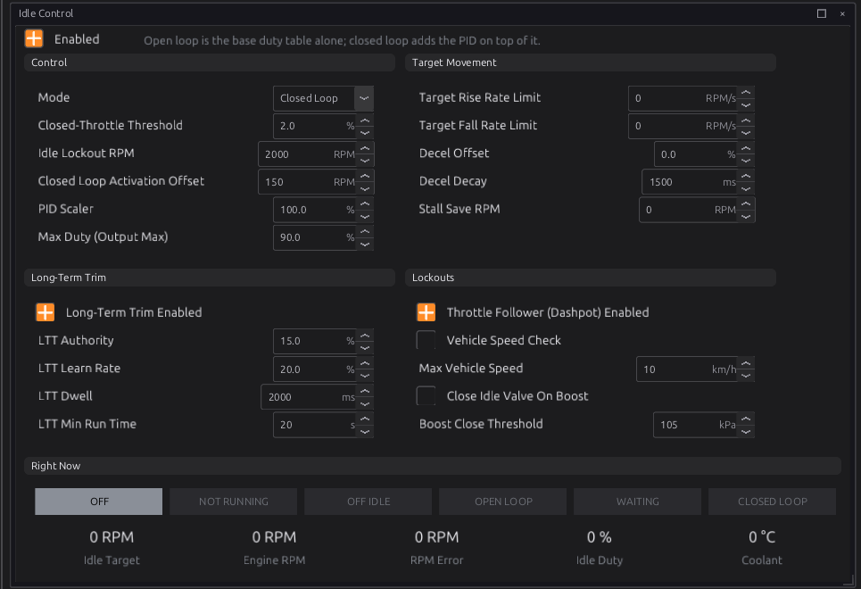
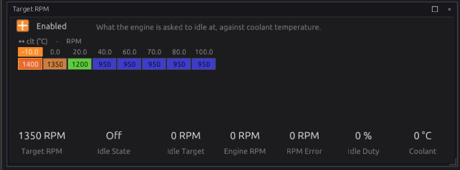
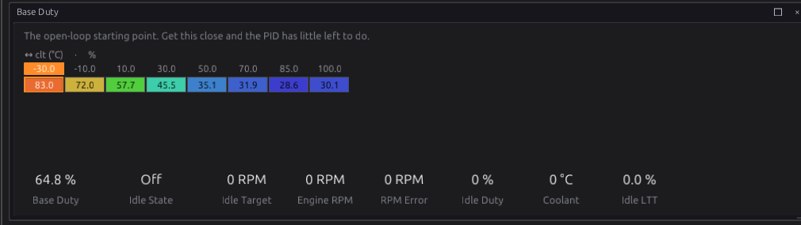
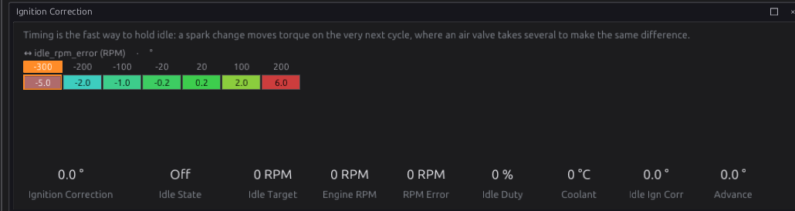
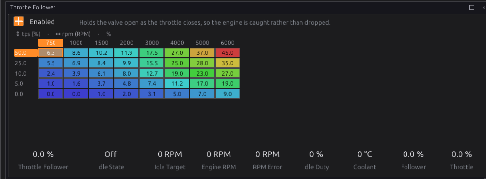
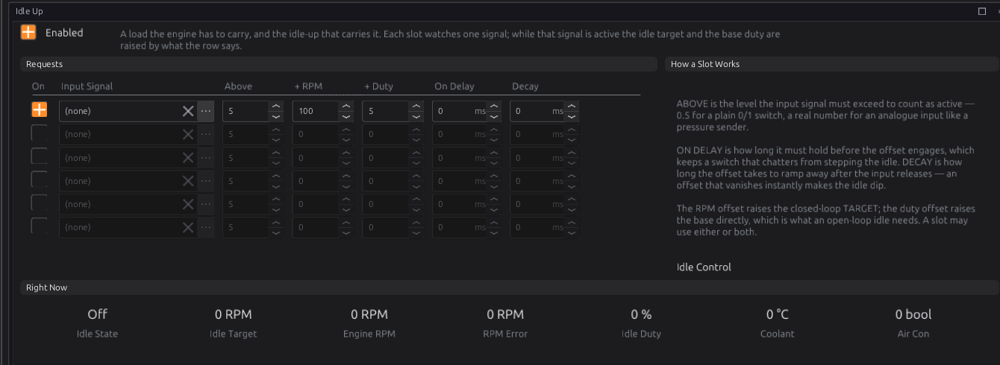
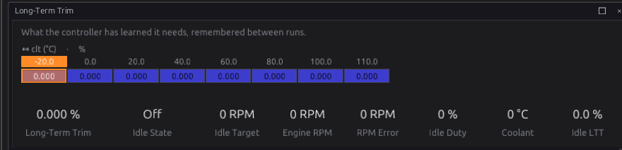
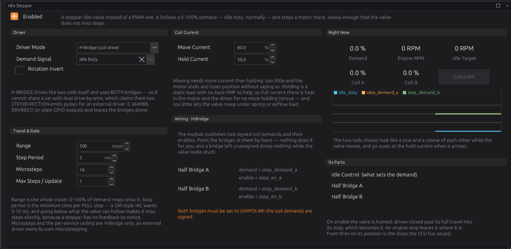

Idle¶
Basic → Advanced
In one sentence: idle control gives the engine the air it needs to idle — more when cold, more when the air conditioning comes on — and, in closed loop, trims it until the engine sits on the idle speed you asked for.
What it does¶
Basic
With the throttle closed, the engine only gets the air that leaks past the plate and through the idle valve. Too little and it stalls; too much and it idles high. What it needs changes all the time: a cold engine needs more air than a warm one, and an air-conditioning compressor or a cooling fan adds load the engine has to carry.
The Idle module:
- Sets an idle target speed, from coolant temperature, raised for a while after starting and while an accessory is on.
- Works out the air the engine needs: a base amount from coolant temperature, plus additions for starting, accessories, and closing the throttle.
- In Closed Loop, trims that air with a PI(+D) controller until the engine speed matches the target, and can nudge the ignition timing for a faster response.
- Publishes the result as Idle Duty
idle_duty, which drives an idle valve, a stepper valve or an electronic throttle.
The Stepper module, in the same chapter, drives a stepper-motor idle valve to the position the idle module asks for.
You need idle control if the engine has an idle valve (PWM or stepper) or an electronic throttle. An engine that idles on a throttle stop screw does not need it.
How it works¶
Intermediate

The module runs 100 times a second.
1 · When is the engine idling?¶
The engine counts as idling (Idle Active idle_active) when all of these are true:
- it is running (above the Cranking Threshold, chapter 15);
- the driver is off the throttle: throttle below Closed-Throttle Threshold (default 2.0 %). On drive-by-wire it is the pedal that is compared, because the throttle plate is held open at idle;
- engine speed is below Idle Lockout RPM (default 2000);
- if Vehicle Speed Check is on, road speed is at or below Max Vehicle Speed (default 10 km/h).
The base air and its additions apply whenever idle control is enabled. Only the closed loop, the long-term trim and the ignition correction wait for the engine to be idling.
Idle State idle_state says what the module is doing:
| State | Means |
|---|---|
| Off | Idle control switched off |
| Not Running | Enabled, but the engine is stopped or cranking |
| Off Idle | Running, but one of the conditions above says it is not idling |
| Open Loop | Idling on the base air (Mode is Open Loop) |
| Waiting | Closed Loop, idling, but the speed is still above the target by more than the activation offset |
| Closed Loop | The PI controller is working. Only here do the gain tables matter. |
2 · The target¶
Idle Target idle_target_rpm is:
- the Idle Target RPM table (coolant, optionally × road speed),
- plus the Idle Start Target Offset (engine run time, optionally × coolant), for a higher idle just after starting,
- plus any active Idle Up slot's RPM offset,
- rate-limited by Target Rise Rate Limit and Target Fall Rate Limit (RPM per second, 0 = no limit), so a step in the target does not make the controller lurch.
3 · The air¶
The base air is:
- the Base Duty table (coolant),
- plus the Idle Start Base Offset (run time), extra air just after starting,
- plus any active Idle Up slot's duty offset,
- plus the Throttle Follower (a dashpot: extra air by speed × throttle that follows the throttle up at once, and on a tip-out bleeds back down at the Follower Decay rate),
- plus the Decel Offset, a kick of air when the throttle closes that fades over Decel Decay (default 1500 ms),
- plus the Long-Term Trim for the current coolant temperature.
The throttle follower and the decel offset both catch the engine as the throttle closes, so it does not fall into a closing valve and stall.
4 · The closed loop¶
In Closed Loop mode, once the engine is idling and its speed has fallen to within Closed Loop Activation Offset (default 150 rpm) above target, a PI controller trims the air. A throttle blip is left to fall freely before the loop takes over.
- RPM error
idle_rpm_error= target − actual speed. Positive means the engine is too slow. - The Proportional, Integral and Derivative gains are tables scheduled on the error itself (optionally × coolant). A small error can be corrected gently and a large one, such as a stall in progress, firmly. The gains are in % per 100 rpm (per second for I). PID Scaler scales all three at once (100 % = as the tables say).
- The trim is limited to the room between Idle Min Output and Max Duty, and the integrator stops there too, so it cannot wind up.
- When the loop is not engaged, the integrator is frozen, not reset, so it does not wind up off idle. When the engine stops, it is reset.
Idle Duty is then limited to Idle Min Output (a table by speed) and Max Duty (default 90 %). If the floor is set above the ceiling, the ceiling wins.
Two overrides have the last word:
- Stall Save RPM (0 = off): if the running engine drops below it, the valve opens to Max Duty to catch it.
- Close Idle Valve On Boost: above Boost Close Threshold (default 105 kPa), the valve is shut (0 %), since an idle bypass leaking under boost does nothing useful.
5 · Ignition correction¶
Spark changes torque on the next combustion; air takes several. While idling, the Idle Ignition
Correction table adds timing by RPM error (optionally × coolant): retard when the engine is above
target, advance when below. It is published as Idle Ign Corr idle_ign_corr and added to the spark
advance (chapter 20). Off idle it is exactly 0.
6 · Long-term trim¶
With Long-Term Trim Enabled, the module learns a correction to the base air for each coolant temperature cell (the breakpoints of Long-Term Trim CLT Axis, default −20 to 110 °C). While it is in closed loop, has run for at least LTT Min Run Time (default 20 s) and has stayed in one coolant cell for LTT Dwell (default 2 s), it moves LTT Learn Rate (default 20 %) of the controller's integrator into that cell, up to LTT Authority (default ±15 %), and takes the same amount out of the integrator. The learned values are kept between runs.
So the base air slowly comes to include what the engine really needs, and the controller starts each idle near zero.
7 · Idle up¶
Six Idle Up slots each watch one signal: an A/C request, a power-steering switch, a fan output, anything on the bus. While the signal is above the slot's Above level for On Delay, the slot adds its + RPM to the target and its + Duty to the base air. When the signal drops, the addition fades over Decay.
8 · What drives the air¶
Idle Duty is an abstract demand, 0–100 %. Something has to turn it into air:
- a PWM idle valve: an output given
idle_duty(chapter 18), on any low-side pin (chapter 12); - a stepper idle valve: the Idle Stepper module (section 9);
- an electronic throttle: the idle demand opens the plate by up to Idle Authority (chapter 22).
With idle control off, nothing is published, and whatever drives the valve falls back to its own failsafe.
9 · The stepper valve¶
A stepper motor has no position sensor, so the Stepper module keeps count:
- Homing. When the module is enabled (and at power-up), it assumes the valve is fully open plus 10 %, and drives it closed that far, into its mechanical stop, where the extra steps slip. That point is 0. After that, the position is the steps it has issued.
- An engine stop does not move the valve.
- Range (default 200 steps) is the whole travel: 0–100 % of the demand maps onto it.
- Step Period (default 5 ms) is the minimum time per full step. Below the valve's rating it misses steps and loses its position without knowing.
- Driver Mode:
- H-Bridge (coil drive): the ECU drives the two coils itself on both H-bridges, so it cannot be used with an electronic throttle. Microsteps (default 16) and Max Steps / Update apply here. Move Current (default 80 %) while stepping and Hold Current (default 30 %) once there.
- Step/Direction (external driver): STEP, DIR and ENABLE signals on ordinary outputs, for an external driver chip, which leaves the H-bridges free.
- Rotation Invert reverses the direction.
- Position Demand Signal defaults to Idle Duty.
Before you start¶
Basic
- The engine runs on fuel and spark (chapters 16, 19, 20), even if it needs a hand on the throttle.
- Coolant temperature and throttle position read correctly (chapter 17). On drive-by-wire, the pedal too.
- The idle valve is wired (chapter 12) and assigned: a PWM valve to an output given
idle_duty(chapter 18), a stepper to both H-bridges or to Step/Direction outputs, or the electronic throttle set up (chapter 22). - For idle-up, the accessory's signal on an input (chapter 17), such as the Air Conditioner Request.
Setting it up¶
Basic → Intermediate
This walk-through uses Example 1 below: closed-loop idle on a PWM idle valve.
Step 1 — The Idle Control page¶
Open Configuration ▸ Engine Functions ▸ Idle Control and tick Enabled.

- Mode: start in Open Loop until the base air is right, then change to Closed Loop.
- Closed-Throttle Threshold, Idle Lockout RPM: the defaults suit most engines.
- Closed Loop Activation Offset, PID Scaler, Max Duty: leave at the defaults to start.
- Target Movement: the rate limits (0 = none), Decel Offset and Decel Decay, and Stall Save RPM (a little below the lowest normal idle, for example 500, or 0 for off).
- Long-Term Trim: leave off until closed loop is tuned.
- Lockouts: Throttle Follower (Dashpot) Enabled, Vehicle Speed Check with Max Vehicle Speed, and Close Idle Valve On Boost with Boost Close Threshold for a turbocharged engine.
The sub-pages appear in the navigation under Idle Control as they apply: the target and gain pages only in Closed Loop, the follower pages only with the follower on.
Step 2 — Target and base air¶


- Target RPM: the idle speed you want at each coolant temperature.
- Base Duty: the air that gives about that speed. This is the most important table: with it right, the closed loop hardly has to work.
- Start Target Offset and Start Base Offset: extra speed and air for the first seconds after starting. The defaults add a little and fade out by 10 s.
- Min Output: the least air the valve is ever given, by engine speed.
Step 3 — Closed loop¶
Change Mode to Closed Loop. The Proportional, Integral and Derivative Gain pages appear. Each is a table on RPM error. Start with the defaults and tune as in Tuning it below.
Step 4 — Ignition correction¶

The default curve takes up to 5° out when the engine is 300 rpm fast and adds up to 6° when it is 200 rpm slow. For this to work, the base timing at idle must have room to advance: an engine idling at maximum useful advance cannot be helped by more.
Step 5 — Throttle follower¶

It holds air in on a tip-out so the engine comes down smoothly. Follower Decay sets how fast it bleeds away (% per second, by speed). Too slow and the engine hangs at high speed after you lift; too fast and it dips.
Step 6 — Idle up¶

- Tick a slot, pick its Input Signal (for example Air Conditioner Request).
- Above: 0.5 suits an on/off switch.
- + RPM raises the target (closed loop), + Duty adds air straight away (works in open loop too). Use both: the duty catches the load at once and the target holds the speed.
- On Delay ignores a switch that chatters; Decay fades the addition out.
Step 7 — Long-term trim¶
Once closed loop is tuned, tick Long-Term Trim Enabled on the Idle Control page. Its page shows what has been learned per coolant cell:

If a cell sits at the authority limit, the base air there is wrong: move the learned amount into Base Duty by hand.
Worked examples¶
Intermediate
Example 1 — PWM idle valve, closed loop, A/C
| Setting | Value | Why |
|---|---|---|
| Idle valve | an output given idle_duty, PWM, e.g. LS13 |
any low-side pin; a diode at the valve only if its maker asks (chapter 12) |
| Mode | Closed Loop (after the base air is right) | holds the target through load changes |
| Stall Save RPM | 500 | catches a stall below the lowest idle |
| Throttle Follower | on, default table | smooth return to idle |
| Idle Up slot 1 | Air Conditioner Request, Above 0.5, +100 RPM, +5 % | the compressor's load |
| Long-Term Trim | on, after tuning | absorbs slow changes in the valve and engine |
Example 2 — stepper idle valve on the H-bridges
A four-wire (bipolar) stepper idle valve, 200 steps full travel, rated 5 ms per step.

| Setting | Value |
|---|---|
| Idle Stepper ▸ Enabled | on |
| Driver Mode | H-Bridge (coil drive) |
| Range / Step Period | 200 steps / 5 ms |
| Half Bridges A and B | demand step_demand_a / step_demand_b, enable step_en_a / step_en_b, Unipolar |
The valve homes (drives fully closed) each time the module is enabled, so give it a second at key-on before cranking. With both bridges used, the engine cannot also have an electronic throttle; use Step/Direction with an external driver if it needs one.
Example 3 — drive-by-wire
No idle valve at all: Idle Duty opens the throttle plate by up to Idle Authority (default 15 %, chapter 22). The idle condition uses the pedal, not the plate. Set Base Duty in terms of that authority: 50 % base duty with 15 % authority is 7.5 % throttle.
Tuning it¶
Intermediate → Advanced
- Warm engine, open loop, no loads. Adjust Base Duty at the running temperature until the
engine idles at about the target. Log
rpm,idle_duty,clt. - As it cools, on later cold starts, fill in the colder Base Duty cells the same way.
- Closed loop. Switch it on. If the speed hunts slowly around the target, the integral gain is too high; lower it. If it is sluggish to recover from a load, raise the proportional gain near zero error. If it overshoots after a disturbance, add a little derivative.
- Ignition correction makes the loop far quicker. Check that the timing change does not make the idle rough.
- Loads: switch on each accessory and set its Idle Up slot so the speed barely dips.
- Tip-outs: blip the throttle and let go. If the engine dips or stalls, raise the Throttle Follower or the Decel Offset; if it hangs, speed up the Follower Decay.
- Finally, Long-Term Trim on.
Channels: idle_state, idle_target_rpm, idle_rpm_error, idle_duty, idle_follower,
idle_ltt_pct, idle_ign_corr, rpm, clt.
Diagnostics¶
Intermediate
| Code | Meaning | What sets it | What to check |
|---|---|---|---|
| P1730 | Stepper: input-demand signal missing | Idle Stepper enabled and its Position Demand Signal is not being published (for example, Idle Control is off) | Idle Control enabled; the Demand Signal |
Idle control raises no codes of its own. Watch Idle State first: it says whether the numbers you are tuning are being used.
Troubleshooting¶
Basic → Advanced
| Symptom | Likely causes | Check |
|---|---|---|
| Idle Duty never changes | Idle Control off; valve output not given idle_duty |
Enabled; the output (chapter 18) |
| State stays Off Idle at idle | Throttle (or pedal) above the Closed-Throttle Threshold; speed above Idle Lockout; Vehicle Speed Check with a bad speed signal | tps (or the pedal) at rest; vehicle_spd |
| State stays Waiting | The engine idles above target + activation offset | Base Duty too high; a vacuum leak; the throttle stop |
| Idle hunts slowly up and down | Integral gain too high | I gain near zero error |
| Idle too high even at 0 % | Air leaking past the valve or throttle, or a vacuum leak | Mechanical: the throttle stop, hoses |
| Stalls when lifting off the throttle | Follower or decel offset too small | Throttle Follower, Decel Offset |
| Hangs at high RPM after lifting | Follower decays too slowly | Follower Decay |
| Stepper idle drifts over time | Steps being missed | Step Period at or above the valve's rating; Move Current |
| Stepper moves the wrong way | Direction reversed | Rotation Invert |
| P1730 | Stepper enabled, idle control off | Enable Idle Control, or change the Demand Signal |
Settings reference¶
Idle Control:
| Setting | What it does |
|---|---|
Idle Control Enabledidle.enabledRange: Off or On Default: Off |
Control idle air. Off, nothing is published for the idle valve and the engine idles on whatever the throttle stop or the ETB idle floor gives it. |
Modeidle.modeRange: one of: Open Loop, Closed Loop Default: Open Loop |
Open = base table only. Closed = base + PI(+D) trim driving RPM to the target table. |
Closed-Throttle Thresholdidle.tps_closed_pctRange: 0.0 to 20.0 Default: 2.0 Units: % |
Below this the driver counts as OFF THE THROTTLE, which is the condition idle control acts on. It also arms the decel kick on the falling edge. On drive-by-wire it is the PEDAL that is compared (the plate is held open at idle by the idle floor, so it can never read closed); on a cable throttle it is the throttle position. Set it above the closed reading with a little margin. |
Idle Lockout RPMidle.idle_lockout_rpmRange: 0 to 5000 Default: 2000 Units: RPM |
Above this RPM the engine is off-idle (closed loop disengages). |
Closed Loop Activation Offsetidle.cl_activation_offset_rpmRange: 0 to 2000 Default: 150 Units: RPM |
Closed loop engages only once RPM falls to within this margin above target (lets a blip free-fall before the loop grabs it). |
PID Scaleridle.pid_scaler_pctRange: 0.0 to 250.0 Default: 100.0 Units: % |
Overall gain trim applied to P/I/D (100 = table values as-is). |
Max Duty (Output Max)idle.max_duty_pctRange: 0.0 to 100.0 Default: 90.0 Units: % |
Ceiling on idle valve output, and also the top of the PI's authority. The integrator's anti-windup is set to exactly this headroom, so the loop cannot accumulate demand it will never be allowed to apply. |
Throttle Follower (Dashpot) Enabledidle.throttle_follower_enabledRange: Off or On Default: Off |
Feedforward dashpot — follows TPS x RPM |
Long-Term Trim Enabledidle.ltt_enabledRange: Off or On Default: Off |
Learn a per-coolant-temperature correction to the base air, so a valve that has drifted or an engine that has aged stops needing the same manual correction every time. It learns only while idling, after a minimum run time and once settled in one temperature cell; the result persists across power cycles. |
LTT Authorityidle.ltt_authority_pctRange: 0.0 to 50.0 Default: 15.0 Units: % |
Max magnitude (+/-) of the learned per-CLT base correction. |
LTT Learn Rateidle.ltt_learn_pctRange: 0.0 to 100.0 Default: 20.0 Units: % |
Fraction of the current PI trim migrated into the learned cell each dwell. |
LTT Dwellidle.ltt_dwell_msRange: 0 to 60000 Default: 2000 Units: ms |
Time held in a CLT cell (closed-loop |
LTT Min Run Timeidle.ltt_min_runtime_sRange: 0 to 600 Default: 20 Units: s |
Do not learn until the engine has run this long (avoids learning during warm-up transients). |
Target Rise Rate Limitidle.rpm_rate_rising_limitRange: 0 to 5000 Default: 0 Units: RPM/s |
Max rate the idle target may RISE; slews the effective target so the PI does not chase a step. 0 = instant. |
Target Fall Rate Limitidle.rpm_rate_falling_limitRange: 0 to 5000 Default: 0 Units: RPM/s |
Max rate (magnitude) the idle target may FALL. 0 = instant. |
Decel Offsetidle.decel_offset_pctRange: 0.0 to 100.0 Default: 0.0 Units: % |
Extra base duty applied on a throttle tip-out, decaying to 0 over Decel Decay (sums with the throttle follower). |
Decel Decayidle.decel_decay_msRange: 0 to 60000 Default: 1500 Units: ms |
Time for the decel offset to bleed to 0 after a tip-out. |
Stall Save RPMidle.stall_offset_rpmRange: 0 to 5000 Default: 0 Units: RPM |
If running RPM falls below this, drive the idle valve full open to catch the stall. 0 = disabled. |
Vehicle Speed Checkidle.vss_check_enabledRange: Off or On Default: Off |
Force idle control off (not idling) when the vehicle-speed signal exceeds Max Vehicle Speed. |
Max Vehicle Speedidle.max_vehicle_speedRange: 0 to 1000 Default: 10 Units: km/h |
Above this vehicle speed, idle_active is forced off (gates closed-loop / learn / ign-corr). |
Close Idle Valve On Boostidle.close_on_boost_enabledRange: Off or On Default: Off |
Drive the idle valve fully closed (duty 0) once MAP exceeds the boost threshold. |
Boost Close Thresholdidle.close_on_boost_kpaRange: 0 to 600 Default: 105 Units: kPa |
MAP above which the idle valve is forced closed. |
Base Duty Table X Channelidle.base_duty_table_x_srcRange: -1 to 32767 Default: 61 |
WHICH SIGNAL the X axis of 'Base Duty Table' is looked up on. The axis holds the breakpoints; this says what is compared against them, so changing it re-points the table at a different quantity without moving a single cell — and the breakpoints, chosen for the old signal's range and units, will almost certainly need redrawing. |
Base Duty Table Y Channelidle.base_duty_table_y_srcRange: -1 to 32767 Default: 61 |
WHICH SIGNAL the Y axis of 'Base Duty Table' is looked up on. The axis holds the breakpoints; this says what is compared against them, so changing it re-points the table at a different quantity without moving a single cell — and the breakpoints, chosen for the old signal's range and units, will almost certainly need redrawing. |
Base Duty Table Y Axis Enabledidle.base_duty_table_y_enRange: Off or On Default: Off |
Use the Y axis of 'Base Duty Table' as a real dimension. Off, the table collapses to a curve on its remaining axes and this one is ignored entirely — the right default for most optional axes, since a dimension nobody calibrates is a set of duplicate rows that still has to be kept in step. |
Idle Target RPM X Channelidle.target_rpm_table_x_srcRange: -1 to 32767 Default: 61 |
WHICH SIGNAL the X axis of 'Idle Target RPM' is looked up on. The axis holds the breakpoints; this says what is compared against them, so changing it re-points the table at a different quantity without moving a single cell — and the breakpoints, chosen for the old signal's range and units, will almost certainly need redrawing. |
Idle Target RPM Y Channelidle.target_rpm_table_y_srcRange: -1 to 32767 Default: 360 |
WHICH SIGNAL the Y axis of 'Idle Target RPM' is looked up on. The axis holds the breakpoints; this says what is compared against them, so changing it re-points the table at a different quantity without moving a single cell — and the breakpoints, chosen for the old signal's range and units, will almost certainly need redrawing. |
Idle Target RPM Y Axis Enabledidle.target_rpm_table_y_enRange: Off or On Default: Off |
Use the Y axis of 'Idle Target RPM' as a real dimension. Off, the table collapses to a curve on its remaining axes and this one is ignored entirely — the right default for most optional axes, since a dimension nobody calibrates is a set of duplicate rows that still has to be kept in step. |
Idle Start Target Offset X Channelidle.start_target_offset_table_x_srcRange: -1 to 32767 Default: 321 |
WHICH SIGNAL the X axis of 'Idle Start Target Offset' is looked up on. The axis holds the breakpoints; this says what is compared against them, so changing it re-points the table at a different quantity without moving a single cell — and the breakpoints, chosen for the old signal's range and units, will almost certainly need redrawing. |
Idle Start Target Offset Y Channelidle.start_target_offset_table_y_srcRange: -1 to 32767 Default: 61 |
WHICH SIGNAL the Y axis of 'Idle Start Target Offset' is looked up on. The axis holds the breakpoints; this says what is compared against them, so changing it re-points the table at a different quantity without moving a single cell — and the breakpoints, chosen for the old signal's range and units, will almost certainly need redrawing. |
Idle Start Target Offset Y Axis Enabledidle.start_target_offset_table_y_enRange: Off or On Default: Off |
Use the Y axis of 'Idle Start Target Offset' as a real dimension. Off, the table collapses to a curve on its remaining axes and this one is ignored entirely — the right default for most optional axes, since a dimension nobody calibrates is a set of duplicate rows that still has to be kept in step. |
Idle Start Base Offset X Channelidle.start_base_offset_table_x_srcRange: -1 to 32767 Default: 321 |
WHICH SIGNAL the X axis of 'Idle Start Base Offset' is looked up on. The axis holds the breakpoints; this says what is compared against them, so changing it re-points the table at a different quantity without moving a single cell — and the breakpoints, chosen for the old signal's range and units, will almost certainly need redrawing. |
Idle Start Base Offset Y Channelidle.start_base_offset_table_y_srcRange: -1 to 32767 Default: 61 |
WHICH SIGNAL the Y axis of 'Idle Start Base Offset' is looked up on. The axis holds the breakpoints; this says what is compared against them, so changing it re-points the table at a different quantity without moving a single cell — and the breakpoints, chosen for the old signal's range and units, will almost certainly need redrawing. |
Idle Start Base Offset Y Axis Enabledidle.start_base_offset_table_y_enRange: Off or On Default: Off |
Use the Y axis of 'Idle Start Base Offset' as a real dimension. Off, the table collapses to a curve on its remaining axes and this one is ignored entirely — the right default for most optional axes, since a dimension nobody calibrates is a set of duplicate rows that still has to be kept in step. |
Idle Min Output X Channelidle.min_output_table_x_srcRange: -1 to 32767 Default: 319 |
WHICH SIGNAL the X axis of 'Idle Min Output' is looked up on. The axis holds the breakpoints; this says what is compared against them, so changing it re-points the table at a different quantity without moving a single cell — and the breakpoints, chosen for the old signal's range and units, will almost certainly need redrawing. |
Idle Min Output Y Channelidle.min_output_table_y_srcRange: -1 to 32767 Default: 61 |
WHICH SIGNAL the Y axis of 'Idle Min Output' is looked up on. The axis holds the breakpoints; this says what is compared against them, so changing it re-points the table at a different quantity without moving a single cell — and the breakpoints, chosen for the old signal's range and units, will almost certainly need redrawing. |
Idle Min Output Y Axis Enabledidle.min_output_table_y_enRange: Off or On Default: Off |
Use the Y axis of 'Idle Min Output' as a real dimension. Off, the table collapses to a curve on its remaining axes and this one is ignored entirely — the right default for most optional axes, since a dimension nobody calibrates is a set of duplicate rows that still has to be kept in step. |
Idle Proportional Gain X Channelidle.p_gain_table_x_srcRange: -1 to 32767 Default: 202 |
WHICH SIGNAL the X axis of 'Idle Proportional Gain' is looked up on. The axis holds the breakpoints; this says what is compared against them, so changing it re-points the table at a different quantity without moving a single cell — and the breakpoints, chosen for the old signal's range and units, will almost certainly need redrawing. |
Idle Proportional Gain Y Channelidle.p_gain_table_y_srcRange: -1 to 32767 Default: 61 |
WHICH SIGNAL the Y axis of 'Idle Proportional Gain' is looked up on. The axis holds the breakpoints; this says what is compared against them, so changing it re-points the table at a different quantity without moving a single cell — and the breakpoints, chosen for the old signal's range and units, will almost certainly need redrawing. |
Idle Proportional Gain Y Axis Enabledidle.p_gain_table_y_enRange: Off or On Default: Off |
Use the Y axis of 'Idle Proportional Gain' as a real dimension. Off, the table collapses to a curve on its remaining axes and this one is ignored entirely — the right default for most optional axes, since a dimension nobody calibrates is a set of duplicate rows that still has to be kept in step. |
Idle Integral Gain X Channelidle.i_gain_table_x_srcRange: -1 to 32767 Default: 202 |
WHICH SIGNAL the X axis of 'Idle Integral Gain' is looked up on. The axis holds the breakpoints; this says what is compared against them, so changing it re-points the table at a different quantity without moving a single cell — and the breakpoints, chosen for the old signal's range and units, will almost certainly need redrawing. |
Idle Integral Gain Y Channelidle.i_gain_table_y_srcRange: -1 to 32767 Default: 61 |
WHICH SIGNAL the Y axis of 'Idle Integral Gain' is looked up on. The axis holds the breakpoints; this says what is compared against them, so changing it re-points the table at a different quantity without moving a single cell — and the breakpoints, chosen for the old signal's range and units, will almost certainly need redrawing. |
Idle Integral Gain Y Axis Enabledidle.i_gain_table_y_enRange: Off or On Default: Off |
Use the Y axis of 'Idle Integral Gain' as a real dimension. Off, the table collapses to a curve on its remaining axes and this one is ignored entirely — the right default for most optional axes, since a dimension nobody calibrates is a set of duplicate rows that still has to be kept in step. |
Idle Derivative Gain X Channelidle.d_gain_table_x_srcRange: -1 to 32767 Default: 202 |
WHICH SIGNAL the X axis of 'Idle Derivative Gain' is looked up on. The axis holds the breakpoints; this says what is compared against them, so changing it re-points the table at a different quantity without moving a single cell — and the breakpoints, chosen for the old signal's range and units, will almost certainly need redrawing. |
Idle Derivative Gain Y Channelidle.d_gain_table_y_srcRange: -1 to 32767 Default: 61 |
WHICH SIGNAL the Y axis of 'Idle Derivative Gain' is looked up on. The axis holds the breakpoints; this says what is compared against them, so changing it re-points the table at a different quantity without moving a single cell — and the breakpoints, chosen for the old signal's range and units, will almost certainly need redrawing. |
Idle Derivative Gain Y Axis Enabledidle.d_gain_table_y_enRange: Off or On Default: Off |
Use the Y axis of 'Idle Derivative Gain' as a real dimension. Off, the table collapses to a curve on its remaining axes and this one is ignored entirely — the right default for most optional axes, since a dimension nobody calibrates is a set of duplicate rows that still has to be kept in step. |
Idle Ignition Correction X Channelidle.idle_ign_corr_table_x_srcRange: -1 to 32767 Default: 202 |
WHICH SIGNAL the X axis of 'Idle Ignition Correction' is looked up on. The axis holds the breakpoints; this says what is compared against them, so changing it re-points the table at a different quantity without moving a single cell — and the breakpoints, chosen for the old signal's range and units, will almost certainly need redrawing. |
Idle Ignition Correction X Axis Enabledidle.idle_ign_corr_table_x_enRange: Off or On Default: On |
Use the X axis of 'Idle Ignition Correction' as a real dimension. Off, the table collapses to a curve on its remaining axes and this one is ignored entirely — the right default for most optional axes, since a dimension nobody calibrates is a set of duplicate rows that still has to be kept in step. |
Idle Ignition Correction Y Channelidle.idle_ign_corr_table_y_srcRange: -1 to 32767 Default: 61 |
WHICH SIGNAL the Y axis of 'Idle Ignition Correction' is looked up on. The axis holds the breakpoints; this says what is compared against them, so changing it re-points the table at a different quantity without moving a single cell — and the breakpoints, chosen for the old signal's range and units, will almost certainly need redrawing. |
Idle Ignition Correction Y Axis Enabledidle.idle_ign_corr_table_y_enRange: Off or On Default: Off |
Use the Y axis of 'Idle Ignition Correction' as a real dimension. Off, the table collapses to a curve on its remaining axes and this one is ignored entirely — the right default for most optional axes, since a dimension nobody calibrates is a set of duplicate rows that still has to be kept in step. |
Idle Throttle Follower Target X Channelidle.throttle_follower_target_table_x_srcRange: -1 to 32767 Default: 319 |
WHICH SIGNAL the X axis of 'Idle Throttle Follower Target' is looked up on. The axis holds the breakpoints; this says what is compared against them, so changing it re-points the table at a different quantity without moving a single cell — and the breakpoints, chosen for the old signal's range and units, will almost certainly need redrawing. |
Idle Throttle Follower Target Y Channelidle.throttle_follower_target_table_y_srcRange: -1 to 32767 Default: 337 |
WHICH SIGNAL the Y axis of 'Idle Throttle Follower Target' is looked up on. The axis holds the breakpoints; this says what is compared against them, so changing it re-points the table at a different quantity without moving a single cell — and the breakpoints, chosen for the old signal's range and units, will almost certainly need redrawing. |
Idle Throttle Follower Decay X Channelidle.throttle_follower_decay_table_x_srcRange: -1 to 32767 Default: 319 |
WHICH SIGNAL the X axis of 'Idle Throttle Follower Decay' is looked up on. The axis holds the breakpoints; this says what is compared against them, so changing it re-points the table at a different quantity without moving a single cell — and the breakpoints, chosen for the old signal's range and units, will almost certainly need redrawing. |
Idle Throttle Follower Decay Y Channelidle.throttle_follower_decay_table_y_srcRange: -1 to 32767 Default: 61 |
WHICH SIGNAL the Y axis of 'Idle Throttle Follower Decay' is looked up on. The axis holds the breakpoints; this says what is compared against them, so changing it re-points the table at a different quantity without moving a single cell — and the breakpoints, chosen for the old signal's range and units, will almost certainly need redrawing. |
Idle Throttle Follower Decay Y Axis Enabledidle.throttle_follower_decay_table_y_enRange: Off or On Default: Off |
Use the Y axis of 'Idle Throttle Follower Decay' as a real dimension. Off, the table collapses to a curve on its remaining axes and this one is ignored entirely — the right default for most optional axes, since a dimension nobody calibrates is a set of duplicate rows that still has to be kept in step. |
Idle Long-Term Trim X Channelidle.idle_ltt_x_srcRange: -1 to 32767 Default: 61 |
WHICH SIGNAL the X axis of 'Idle Long-Term Trim' is looked up on. The axis holds the breakpoints; this says what is compared against them, so changing it re-points the table at a different quantity without moving a single cell — and the breakpoints, chosen for the old signal's range and units, will almost certainly need redrawing. |
Idle Base X Axis (CLT °C) binsidle.idle_x_axis_nRange: 2 to 16 Default: 8 |
How many breakpoints of 'Idle Base X Axis (CLT °C)' are LIVE, out of 16 allocated. Shrinking the axis does not delete the values past the end — they stay in the tune and reappear if it is grown again. Every table sharing this axis is resized with it. Fewer, well-placed breakpoints beat many evenly-spaced ones: resolution is only worth spending where the surface actually bends. |
Idle Base 2nd Axis (Air Con State — idle-up, off) binsidle.idle_y_axis_nRange: 2 to 4 Default: 4 |
How many breakpoints of 'Idle Base 2nd Axis (Air Con State — idle-up, off)' are LIVE, out of 4 allocated. Shrinking the axis does not delete the values past the end — they stay in the tune and reappear if it is grown again. Every table sharing this axis is resized with it. Fewer, well-placed breakpoints beat many evenly-spaced ones: resolution is only worth spending where the surface actually bends. |
Target RPM X Axis (CLT °C) binsidle.target_clt_axis_nRange: 2 to 8 Default: 8 |
How many breakpoints of 'Target RPM X Axis (CLT °C)' are LIVE, out of 8 allocated. Shrinking the axis does not delete the values past the end — they stay in the tune and reappear if it is grown again. Every table sharing this axis is resized with it. Fewer, well-placed breakpoints beat many evenly-spaced ones: resolution is only worth spending where the surface actually bends. |
Target RPM 2nd Axis (Vehicle Speed — off) binsidle.target_vss_axis_nRange: 2 to 4 Default: 4 |
How many breakpoints of 'Target RPM 2nd Axis (Vehicle Speed — off)' are LIVE, out of 4 allocated. Shrinking the axis does not delete the values past the end — they stay in the tune and reappear if it is grown again. Every table sharing this axis is resized with it. Fewer, well-placed breakpoints beat many evenly-spaced ones: resolution is only worth spending where the surface actually bends. |
Start Offset X Axis (Engine Run Time s) binsidle.start_runtime_axis_nRange: 2 to 8 Default: 6 |
How many breakpoints of 'Start Offset X Axis (Engine Run Time s)' are LIVE, out of 8 allocated. Shrinking the axis does not delete the values past the end — they stay in the tune and reappear if it is grown again. Every table sharing this axis is resized with it. Fewer, well-placed breakpoints beat many evenly-spaced ones: resolution is only worth spending where the surface actually bends. |
Start Offset 2nd Axis (CLT °C — off) binsidle.start_clt_axis_nRange: 2 to 4 Default: 4 |
How many breakpoints of 'Start Offset 2nd Axis (CLT °C — off)' are LIVE, out of 4 allocated. Shrinking the axis does not delete the values past the end — they stay in the tune and reappear if it is grown again. Every table sharing this axis is resized with it. Fewer, well-placed breakpoints beat many evenly-spaced ones: resolution is only worth spending where the surface actually bends. |
Min Output X Axis (RPM) binsidle.min_rpm_axis_nRange: 2 to 16 Default: 7 |
How many breakpoints of 'Min Output X Axis (RPM)' are LIVE, out of 16 allocated. Shrinking the axis does not delete the values past the end — they stay in the tune and reappear if it is grown again. Every table sharing this axis is resized with it. Fewer, well-placed breakpoints beat many evenly-spaced ones: resolution is only worth spending where the surface actually bends. |
Min Output 2nd Axis (CLT °C — off) binsidle.min_clt_axis_nRange: 2 to 4 Default: 4 |
How many breakpoints of 'Min Output 2nd Axis (CLT °C — off)' are LIVE, out of 4 allocated. Shrinking the axis does not delete the values past the end — they stay in the tune and reappear if it is grown again. Every table sharing this axis is resized with it. Fewer, well-placed breakpoints beat many evenly-spaced ones: resolution is only worth spending where the surface actually bends. |
Gain X Axis (Idle RPM Error) binsidle.gain_err_axis_nRange: 2 to 8 Default: 7 |
How many breakpoints of 'Gain X Axis (Idle RPM Error)' are LIVE, out of 8 allocated. Shrinking the axis does not delete the values past the end — they stay in the tune and reappear if it is grown again. Every table sharing this axis is resized with it. Fewer, well-placed breakpoints beat many evenly-spaced ones: resolution is only worth spending where the surface actually bends. |
Gain 2nd Axis (CLT °C — off) binsidle.gain_clt_axis_nRange: 2 to 8 Default: 8 |
How many breakpoints of 'Gain 2nd Axis (CLT °C — off)' are LIVE, out of 8 allocated. Shrinking the axis does not delete the values past the end — they stay in the tune and reappear if it is grown again. Every table sharing this axis is resized with it. Fewer, well-placed breakpoints beat many evenly-spaced ones: resolution is only worth spending where the surface actually bends. |
Ign Corr X Axis (Idle RPM Error) binsidle.igncorr_err_axis_nRange: 2 to 8 Default: 7 |
How many breakpoints of 'Ign Corr X Axis (Idle RPM Error)' are LIVE, out of 8 allocated. Shrinking the axis does not delete the values past the end — they stay in the tune and reappear if it is grown again. Every table sharing this axis is resized with it. Fewer, well-placed breakpoints beat many evenly-spaced ones: resolution is only worth spending where the surface actually bends. |
Ign Corr 2nd Axis (CLT °C — off) binsidle.igncorr_clt_axis_nRange: 2 to 4 Default: 4 |
How many breakpoints of 'Ign Corr 2nd Axis (CLT °C — off)' are LIVE, out of 4 allocated. Shrinking the axis does not delete the values past the end — they stay in the tune and reappear if it is grown again. Every table sharing this axis is resized with it. Fewer, well-placed breakpoints beat many evenly-spaced ones: resolution is only worth spending where the surface actually bends. |
Throttle Follower X Axis (RPM) binsidle.tf_rpm_axis_nRange: 2 to 8 Default: 8 |
How many breakpoints of 'Throttle Follower X Axis (RPM)' are LIVE, out of 8 allocated. Shrinking the axis does not delete the values past the end — they stay in the tune and reappear if it is grown again. Every table sharing this axis is resized with it. Fewer, well-placed breakpoints beat many evenly-spaced ones: resolution is only worth spending where the surface actually bends. |
Throttle Follower Y Axis (TPS %) binsidle.tf_tps_axis_nRange: 2 to 8 Default: 5 |
How many breakpoints of 'Throttle Follower Y Axis (TPS %)' are LIVE, out of 8 allocated. Shrinking the axis does not delete the values past the end — they stay in the tune and reappear if it is grown again. Every table sharing this axis is resized with it. Fewer, well-placed breakpoints beat many evenly-spaced ones: resolution is only worth spending where the surface actually bends. |
Decay X Axis (RPM) binsidle.tfd_rpm_axis_nRange: 2 to 8 Default: 6 |
How many breakpoints of 'Decay X Axis (RPM)' are LIVE, out of 8 allocated. Shrinking the axis does not delete the values past the end — they stay in the tune and reappear if it is grown again. Every table sharing this axis is resized with it. Fewer, well-placed breakpoints beat many evenly-spaced ones: resolution is only worth spending where the surface actually bends. |
Decay 2nd Axis (CLT °C — off) binsidle.tfd_clt_axis_nRange: 2 to 4 Default: 4 |
How many breakpoints of 'Decay 2nd Axis (CLT °C — off)' are LIVE, out of 4 allocated. Shrinking the axis does not delete the values past the end — they stay in the tune and reappear if it is grown again. Every table sharing this axis is resized with it. Fewer, well-placed breakpoints beat many evenly-spaced ones: resolution is only worth spending where the surface actually bends. |
Long-Term Trim CLT Axis (°C) binsidle.ltt_clt_axis_nRange: 2 to 8 Default: 8 |
How many breakpoints of 'Long-Term Trim CLT Axis (°C)' are LIVE, out of 8 allocated. Shrinking the axis does not delete the values past the end — they stay in the tune and reappear if it is grown again. Every table sharing this axis is resized with it. Fewer, well-placed breakpoints beat many evenly-spaced ones: resolution is only worth spending where the surface actually bends. |
Base Duty Tableidle.base_duty_tableRange: 0.0 to 100.0 Default: 4 × 8 table Units: % |
The open-loop air the engine needs to idle at each coolant temperature — the foundation everything else adds to. Get this right and closed loop barely has to act; get it wrong and the loop spends its whole authority covering for it, leaving nothing for real disturbances. |
Idle Base X Axis (CLT °C)idle.idle_x_axisRange: 0 to 0 Default: 8-point curve Units: C |
Coolant breakpoints for the base duty table. Concentrate them through the warm-up range, where the required air changes fastest. |
Idle Base 2nd Axis (Air Con State — idle-up, off)idle.idle_y_axisRange: 0 to 0 Default: 4-point curve |
Optional second axis for base duty — air-conditioning state, off by default. Normally left off, since the idle-up slots handle accessory loads more directly. |
Idle Target RPMidle.target_rpm_tableRange: 0 to 10000 Default: 4 × 8 table Units: RPM |
The idle RPM being aimed for at each coolant temperature. Cold engines want a higher idle for stability and catalyst warm-up; this curve is what walks it down as the engine warms. |
Target RPM X Axis (CLT °C)idle.target_clt_axisRange: 0 to 0 Default: 8-point curve Units: C |
Coolant breakpoints for the target RPM curve. |
Target RPM 2nd Axis (Vehicle Speed — off)idle.target_vss_axisRange: 0 to 0 Default: 4-point curve Units: km/h |
Optional second axis for target RPM — vehicle speed, off by default. Enabling it raises idle while rolling, which helps a manual car coast to a stop without dipping. |
Idle Start Target Offsetidle.start_target_offset_tableRange: -5000 to 5000 Default: 4 × 6 table Units: RPM |
Extra idle RPM just after starting, decaying with engine run time. A cold start wants a deliberately high idle for a few seconds; this is what adds it without distorting the steady-state target curve. |
Idle Start Base Offsetidle.start_base_offset_tableRange: -10.0 to 10.0 Default: 4 × 6 table Units: % |
Extra idle AIR just after starting, decaying with run time. It works with the target offset: the target says what RPM to aim for, this gives the loop a head start on the air needed to get there instead of making it integrate up from nothing. |
Start Offset X Axis (Engine Run Time s)idle.start_runtime_axisRange: 0 to 0 Default: 6-point curve Units: s |
Engine run time breakpoints, in seconds, for both start offsets. These decide how long the after-start enrichment of air and target lasts. |
Start Offset 2nd Axis (CLT °C — off)idle.start_clt_axisRange: 0 to 0 Default: 4-point curve Units: C |
Optional second axis for the start offsets — coolant, off by default. Turn it on when a cold start needs a much longer or larger offset than a warm restart. |
Idle Min Outputidle.min_output_tableRange: 0.0 to 100.0 Default: 4 × 7 table Units: % |
The floor under idle output at each RPM — the minimum air the engine is ever given. It is also the bottom of the PI's authority, so the loop cannot pull air below it however far RPM overshoots. This is the setting that stops an over-correcting loop from stalling the engine. |
Min Output X Axis (RPM)idle.min_rpm_axisRange: 0 to 0 Default: 7-point curve Units: RPM |
RPM breakpoints for the minimum output floor. |
Min Output 2nd Axis (CLT °C — off)idle.min_clt_axisRange: 0 to 0 Default: 4-point curve Units: C |
Optional second axis for the minimum output — coolant, off by default. Useful when a cold engine needs a higher floor than a hot one to stay running. |
Idle Proportional Gainidle.p_gain_tableRange: 0.00 to 0.00 Default: 8 × 7 table |
Proportional gain scheduled on idle RPM ERROR, in percent per 100 RPM. Scheduling on the error itself is what lets a small deviation be corrected gently and a large one — a stall in progress — be met hard, from one curve. It is also where a DEADBAND is written: zero the cells either side of zero error and the loop holds its trim across that band instead of chasing the RPM wander every engine has. |
Idle Integral Gainidle.i_gain_tableRange: 0.00 to 0.00 Default: 8 × 7 table |
Integral gain versus RPM error, in percent per 100 RPM per second. This is what removes the standing error so the engine actually sits on target, and it is the term that most often causes a slow hunt if it is too high — so it is gentlest at the centre, where the engine already is, and strongest at the edges, where something has gone wrong. Zeroing the centre cells turns that gentleness into an outright deadband. |
Idle Derivative Gainidle.d_gain_tableRange: 0.00 to 0.00 Default: 8 × 7 table |
Derivative gain versus RPM error. It damps the approach to target, which is what stops the loop overshooting after a disturbance and setting up an oscillation. |
Gain X Axis (Idle RPM Error)idle.gain_err_axisRange: 0 to 0 Default: 7-point curve Units: RPM |
Idle RPM error breakpoints for the gain tables. Zero error sits ON a breakpoint, so the gain the engine actually runs on — the one at target — is the number that was typed rather than whatever the two cells either side average to. It is also what makes a deadband expressible: zero the -20/0/+20 cells and the gain is zero across that whole span and ramps back in by +/-50, with no step at the edge. |
Gain 2nd Axis (CLT °C — off)idle.gain_clt_axisRange: 0 to 0 Default: 8-point curve Units: C |
Optional second axis for the gain tables — coolant, off by default. |
Idle Ignition Correctionidle.idle_ign_corr_tableRange: -60.0 to 60.0 Default: 4 × 7 table Units: deg |
Timing correction versus idle RPM error. Spark is a far faster idle actuator than air: advancing timing raises torque within one combustion event, where an air change takes several. This curve is what catches a dip before the valve can respond, and it is the main tool for a rock-steady idle. |
Ign Corr X Axis (Idle RPM Error)idle.igncorr_err_axisRange: 0 to 0 Default: 7-point curve Units: RPM |
Idle RPM error breakpoints for the ignition correction curve. |
Ign Corr 2nd Axis (CLT °C — off)idle.igncorr_clt_axisRange: 0 to 0 Default: 4-point curve Units: C |
Optional second axis for the idle ignition correction — coolant, off by default. |
Idle Throttle Follower Targetidle.throttle_follower_target_tableRange: 0.0 to 100.0 Default: 5 × 8 table Units: % |
A dashpot: extra idle air versus RPM and throttle, which follows the throttle UP instantly and is bled back down on tip-out. It bridges the overrun so the engine does not fall into a closing valve and stall. It runs whether or not idle control is otherwise active. |
Throttle Follower X Axis (RPM)idle.tf_rpm_axisRange: 0 to 0 Default: 8-point curve Units: RPM |
RPM breakpoints for the throttle follower. |
Throttle Follower Y Axis (TPS %)idle.tf_tps_axisRange: 0 to 0 Default: 5-point curve Units: % |
Throttle breakpoints for the throttle follower — how much air is held for a given throttle opening. |
Idle Throttle Follower Decayidle.throttle_follower_decay_tableRange: 0.0 to 100.0 Default: 4 × 6 table Units: %/s |
How fast the follower bleeds away after a tip-out, in percent per second, versus RPM. Slow leaves the engine hanging at high RPM after lifting; fast risks the dip the follower exists to prevent. |
Decay X Axis (RPM)idle.tfd_rpm_axisRange: 0 to 0 Default: 6-point curve Units: RPM |
RPM breakpoints for the follower decay rate. |
Decay 2nd Axis (CLT °C — off)idle.tfd_clt_axisRange: 0 to 0 Default: 4-point curve Units: C |
Optional second axis for the decay rate — coolant, off by default. A cold engine usually wants a slower bleed. |
Long-Term Trim CLT Axis (°C)idle.ltt_clt_axisRange: 0 to 0 Default: 8-point curve Units: C |
The coolant breakpoints the long-term trim learns against — each is one learned cell. Few, well-spaced cells learn quickly and generalise; many cells are more precise but each is visited rarely, so they take far longer to converge. |
Idle Long-Term Trimidle.idle_lttRange: -100.000 to 100.000 Default: 8-point curve Units: % |
Learned trim (runtime RAM, persisted to SD; not part of the tune). |
Idle Stepper:
| Setting | What it does |
|---|---|
Stepper Enabledstepper.enabledRange: Off or On Default: Off |
Drive a bipolar stepper to a position demanded by a bus signal (typically idle duty). Off, no coil is energised and no step signal is emitted, so the valve stays wherever it was left. |
Driver Modestepper.driver_modeRange: one of: H-Bridge (coil drive), Step/Direction (external driver) Default: H-Bridge (coil drive) |
H-Bridge: two signed coil demands drive the two HBridge slots (uses both bridges). Step/Direction: STEP/DIR/ENABLE bus outputs for an external driver IC (A4988/DRV8825) wired to Outputs GPIO slots — frees the H-bridges for ETB. |
Position Demand Signalstepper.input_sigRange: -1 to 32767 Default: 137 |
0..100% position demand input. Default idle_duty for a stepper idle valve. |
Rotation Invertstepper.dir_invertRange: Off or On Default: Off |
Reverse stepper rotation direction (H-Bridge flips the sin coil B phase; Step/Dir flips the DIR level). |
Microsteps per Full Stepstepper.microstepRange: 1 to 256 Default: 16 |
H-Bridge only: cos/sin render granularity. In Step/Direction the external driver owns microstepping. |
Rangestepper.range_stepsRange: 1 to 10000 Default: 200 Units: steps |
Total travel (0..100% maps to 0..range_steps). H-Bridge: microsteps. Step/Direction: driver steps. |
Max Steps per Updatestepper.max_step_per_updateRange: 1 to 1000 Default: 1 Units: steps/svc |
H-Bridge only: microsteps advanced per eligible service (velocity ramp ceiling). |
Step Periodstepper.step_period_msRange: 1 to 300 Default: 5 Units: ms |
Minimum time per FULL step (rate limit). GM-style IAC valves run ~5-10 ms/step (100-200 steps/s) — do not go below the valve rating or it will miss steps. H-Bridge divides this across microsteps. |
Move Currentstepper.move_current_pctRange: 0.0 to 100.0 Default: 80.0 Units: % |
Coil current while the motor is actually stepping, as a percentage of full drive. Moving needs more current than holding — too little and the motor stalls and silently loses position, since a stepper has no feedback to notice. |
Hold Currentstepper.hold_current_pctRange: 0.0 to 100.0 Default: 30.0 Units: % |
Coil current once the target is reached. Deliberately lower than the move current: holding is a static load with no back-EMF to help, so full current here is heat in the motor and the driver for no extra holding torque. Too low and the valve creeps under spring or airflow load. |
Related¶
- Chapter 12 — Wiring outputs (idle valves, H-bridges)
- Chapter 15 — Engine and vehicle basics (Cranking Threshold)
- Chapter 18 — Outputs and the pin system (giving an output
idle_duty) - Chapter 20 — Ignition (where the idle ignition correction is added)
- Chapter 22 — Electronic throttle (Idle Authority)